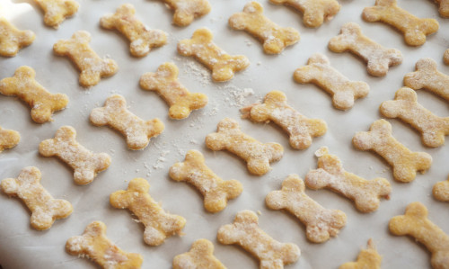

Tuna Cat Treats

Description
Cats love tuna! Make sure to make them look cute, it's important to your cat(s).
Ingredients
- 5 oz can tuna, drained
- 1 egg
- 1 cup flour
- 1 tbsp olive oil
- 1/2 banana, mashed
Steps
- Preheat the oven to 350 degress F and tear off a piece of parchment paper.
- Mix all the ingredients. The dough will shape into a ball and be somewhat tacky.
- Place dough onto parchment paper.
- Cut another piece of parchment paper and place it over the dough ball.
- Flatten the dough out with your hand somewhat then roll out with a rolling pin until about 1/4 in thick.
- Place the parchment paper with flattened dough onto a cookie sheet.
- Remove the top piece of parchment paper and discard.
- Bake for 10 to 15 minutes until firm and golden.